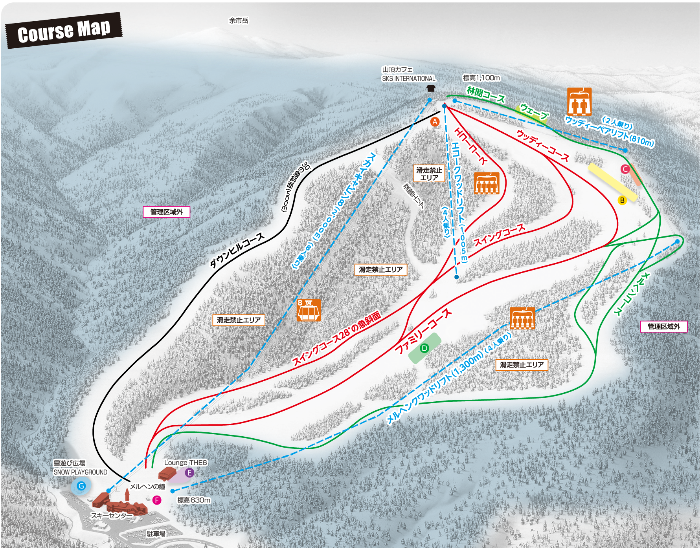
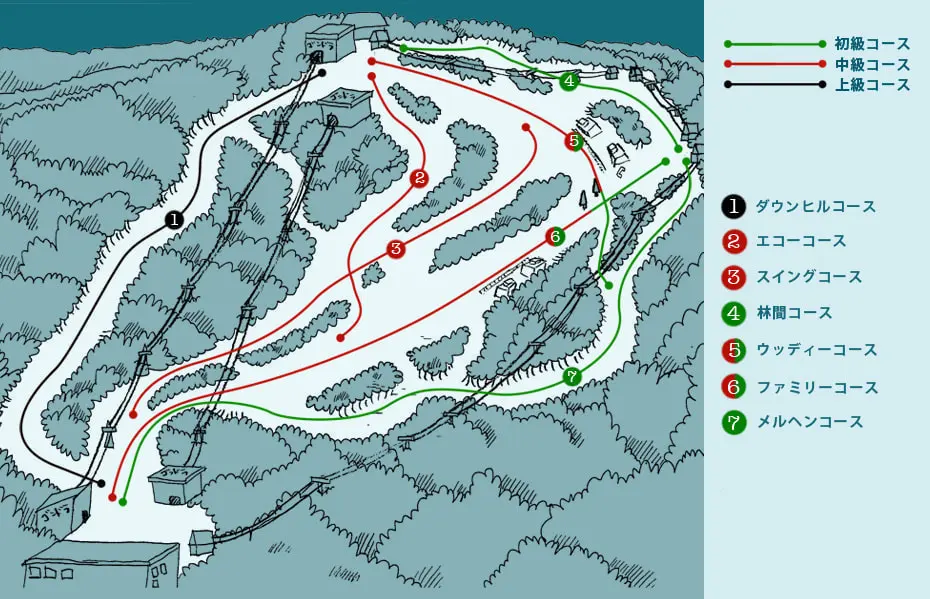

札幌国際 — 公式 slopemap × gelanding 2016 照合
下層: official-slopemap.png（1781×1421）·
上層: gelanding-2016.webp（930×599）·
スライダーで位置合わせ → チェックリストを目視で確認。
保存値は overlay-transform.json に書き出し可。


照合チェックリスト（layout-QA.md と同期）
- スカイキャビン8（左〜中央の長い索道）の向きが一致するか
- ①ダウンヒル（左端・黒）の大ループが一致するか
- ②エコー・③スイング（中央赤）の位置関係
- ④林間（山頂右）・⑤ウッディ（右上ジグザグ）
- ⑥ファミリー（中央下・幅広）・⑦メルヘン（右端縦長）
- 基地（630m）・山頂（1,100m）の上下関係
- gelanding に無い要素（禁止エリア・スノーエスカレーター等）は公式のみで正